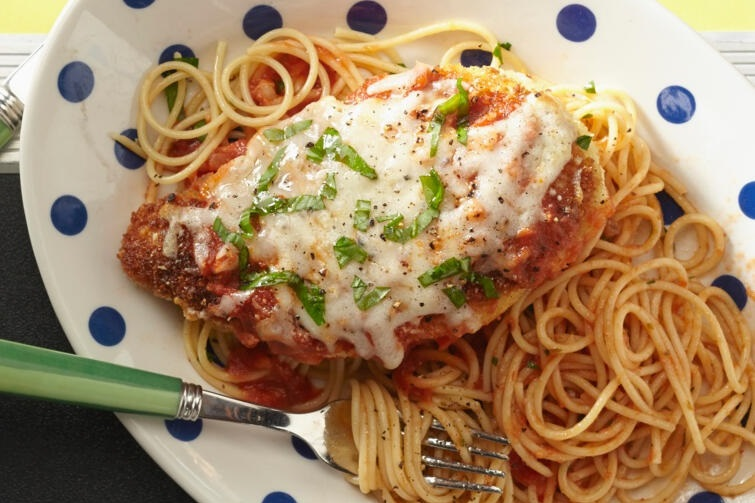

Página inicial
Frango à Parmegiana

Sobre a receita:
Frango à Parmegiana é sem dúvida o mais popular prato sem massa nos restaurantes ítalo-americanos.
Nesta receita vamos dar uma dica para deixar ainda mais saboroso este prato.
Tempo de preparo: 45 minutos.
Serve: até 04 pessoas.
Ingredientes:
- 04 peitos de frango - desossados, e sem pele;
- 02 ovos;
- 01 xícara de farinha panko;
- ¾ de xícara de queijo parmesão ralado, dividido;
- 02 colheres de sopa de farinha de trigo, ou mais cas necessário;
- 01 xícara de azeite;
- ½ xícara de molho de tomate;
- ¼ de xícara de mussarela fresca, cortada em cubos;
- ¼ de xícara de manjericão fresco picado;
- ½ xícara de queijo provolone ralado;
- 01 colhe de sopa de azeite.
Preparo:
- Pré-aqueça o forno a 230° C;
- Coloque os peitos de frango de um saco plástico (tipo Ziploc) em uma superfície sólida e nivelada. Com o lado liso do martelo de carne, bata firmemente o frango até uma espessura de 1,2 centímetros;
- Tempere o frango com sal e pimenta à gosto;
- Bata os ovos em uma tigela rasa, e reserve;
- Misture a farinha panko junto com uma metade do queijo parmesão ralado em uma tigela separada, e reserve;
- Coloque a farinha em uma peneira ou coador, e polvilhe sobre os peitos de frango, cobrindo uniformemente os dois lados;
- Mergulhe o peito de frango coberto de farinha nos ovos batidos e em seguida na farinha panko, pressionando ambos os lados. Repite este passo para cada peito de frango. Deixe descansar por 10 à 15 minutos;
- Em uma frigideira, aqueça o azeite em fogo médio-alto. Frite até dourar (cerca de 02 minutos de cada lado);
- Coloque o frango em uma assadeira, e cubra cada peito com o molho de tomate. Adicione também, em quantidades iguais, o queijo mussarela, o manjericão e o queijo provolone ralado Regue cada peito com azeite;
- Leve ao forno pré-aquecido até o fim do cozimento do frango, entre 15 e 20 minutos.
Informações nutricionais:
Por porção: 471 calorias.
Ir para o topo